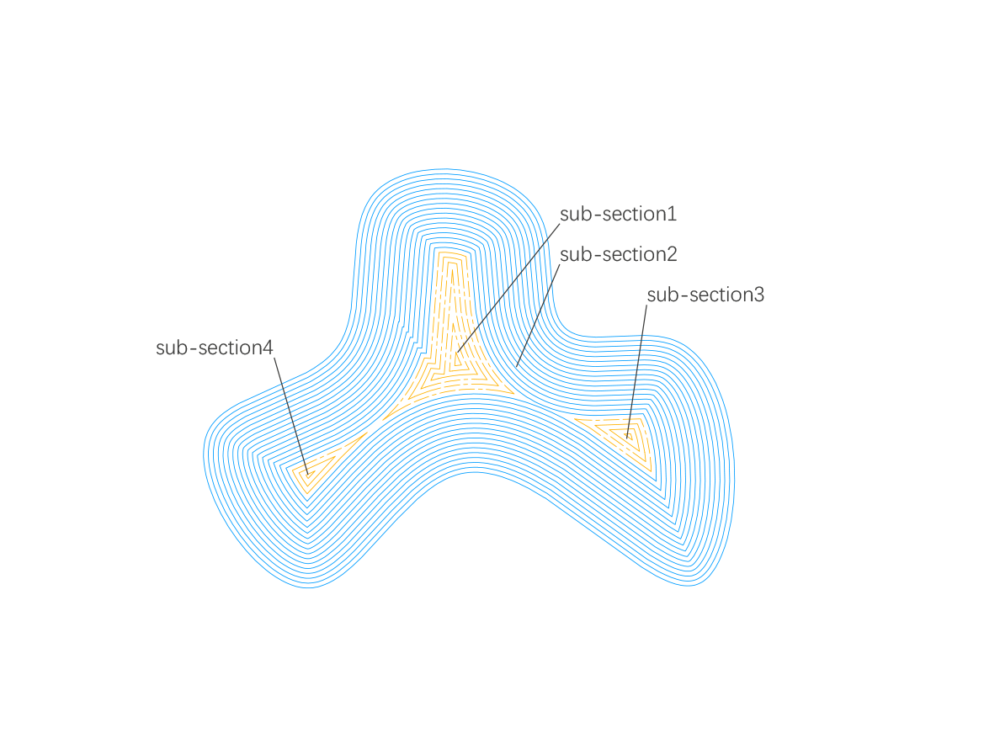
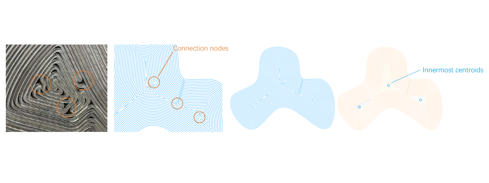
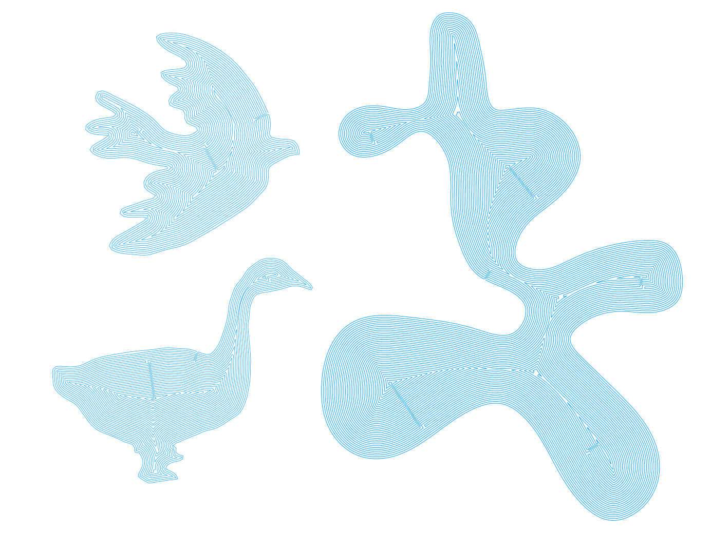

When designing and tending to print an component with bottom,such as a vase, printing the bottom layers at one time or processing the whole printing path into a single curve is important concerning the material's property and hardware's limitation.

However, problems would come when the printing component is complex. Normally, we would use the "polyline offset" of "Clipper" in Grasshopper to generate the infill path, but this function would fail when the geometry generates several sub-sections.

Therefore, after doing some researches of Computational Graphics, I made a small program to generate continuous fermat spiral curve for complex geomery for infilling.
